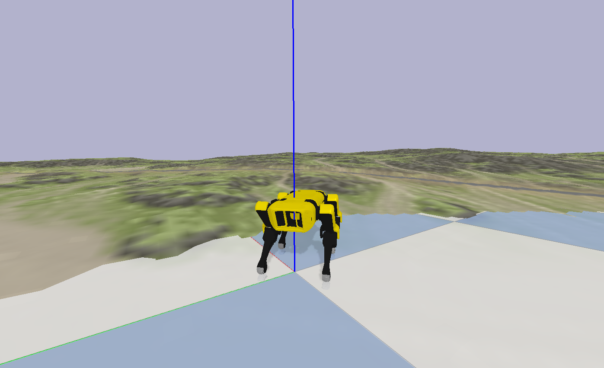

Reinforcement Learning Environment¶
We now have a Reinforcement Learning Environment which uses Pybullet and OpenAI Gym! It contains a variety of optional terrains, which can be activated using heightfield=True in the environment class constructor.
If you try to launch the vanilla gait on fairly difficult terrain, Spot will fall very quickly:

By training an Augmented Random Search agent, this can be overcome:

If you are new to RL, I recommend you try a simpler example. Notice that if we choose non-ideal parameters for the generated gait, the robot drifts over time with a forward command:

You should try to train a policy which outputs a yaw command to eliminate the robot’s drift, like this:

You can choose a PNG-generated terrain:

Or, for more control, you can choose a programmatically generated heightfield:

Notice that when the simulation resets, the terrain changes. What you cannot see is that the robot’s link masses and frictions also change under the hood for added training robustness:

Quickstart Reinforcement Learning¶
pip3 install numpy
pip3 install pybullet
pip3 install gym
cd spot_bullet/src
./spot_ars_eval.py
Optional Arguments
-h, --help show this help message and exit
-hf, --HeightField Use HeightField
-r, --DebugRack Put Spot on an Elevated Rack
-p, --DebugPath Draw Spot's Foot Path
-a, --AgentNum Agent Number To Load